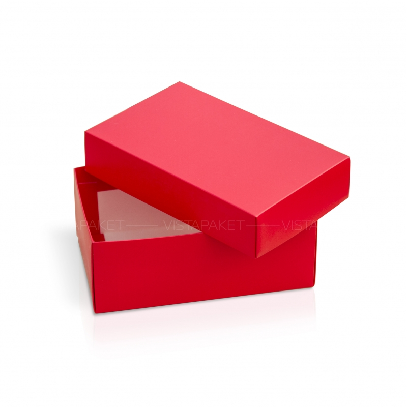
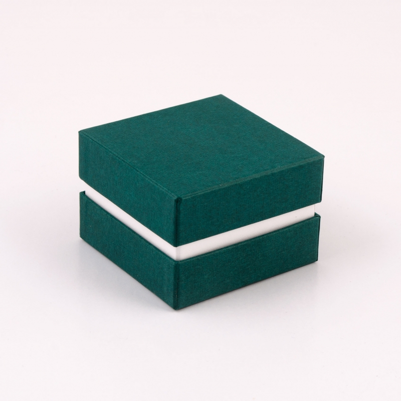
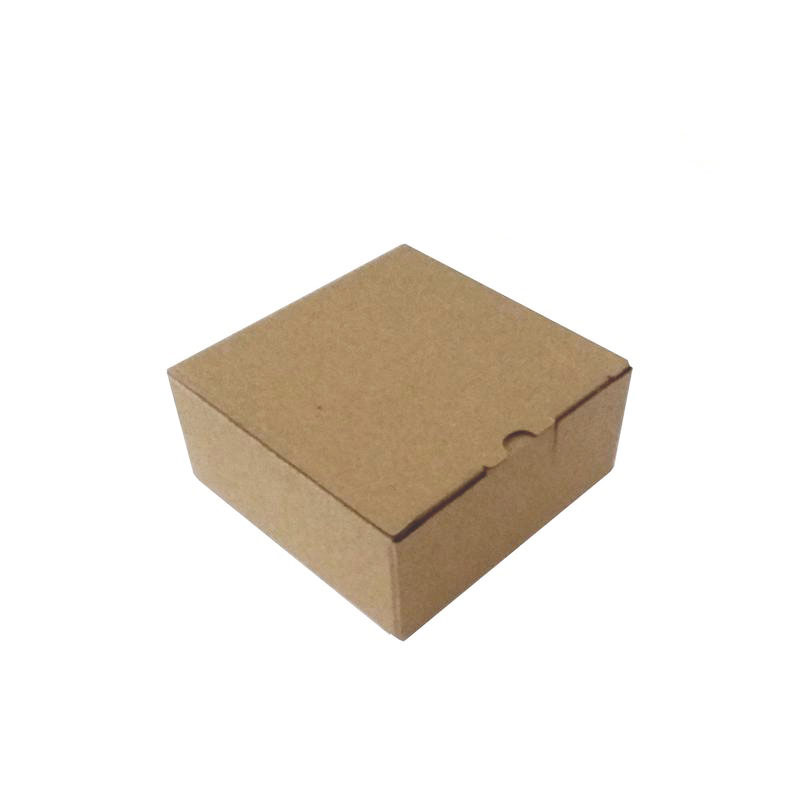

Red Color Box
Изделие простой конструкции из картона или другого плотного материала в форме многогранника, чаще всего — прямоугольного параллелепипеда.
Green Color Box
Обычно в случае тонких и непрочных (например, картонных) стенок используется слово «коробка», а в случае более толстых (например, деревянных) стенок используется слово «ящик». Форма у коробки (ящика) остаётся одинаковой как у пустой коробки, так и у заполненной, что отличает её от мешков и сумок.
Simple Box
Форма прямоугольного параллелепипеда (реже — другого многогранника) отличает коробку (ящик) от ведра, банки, бутыли и тому подобных ёмкостей. Такая форма имеет преимущество, так как экономит место при складировании и перевозке транспортом, учитывая, что соседние ящики (а также комнаты, шкафы, вагоны и так далее) обычно также имеют форму многогранника.